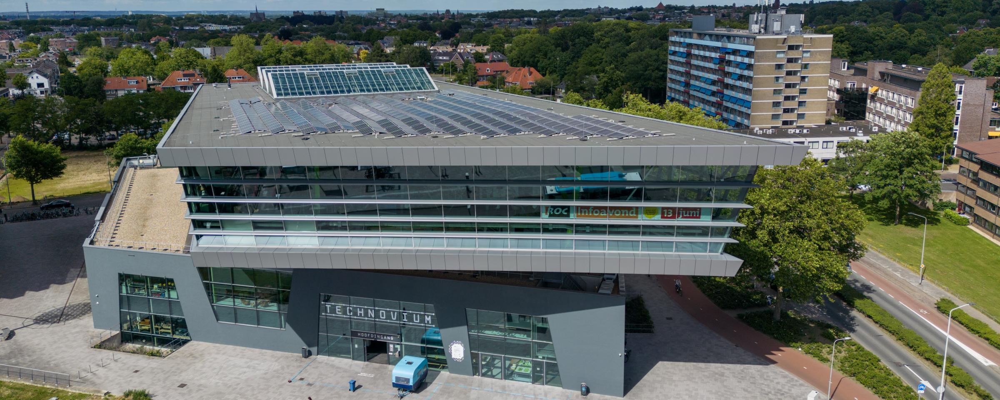

Scholen
Appelhof
Pax Christi College
Technovium
Portfolio
Luuk
Meulenbelt
Opleidingen
Scholen
Op mijn basischool had ik advies om naar Theorie te gaan maar had toen nog hard gewerkt om toch naar Havo te gaan en dat was gelukt. Dus ik ging naar het Pax Christi College in Druten waar ik Havo ging volgen, dat heb ik helaas niet kunnen halen omdat ik 2 keer achter elkaar in de 4e bleef zitten.

Ik moest dus naar een andere school en opleiding gaan zoeken, ik wist eigenlijk al wat ik wilde doen en dat was een opleiding naar het leger, maar daar moest je al lang van tevoren bij aanmelden. Ik ging naar een andere opleiding kijken en kwam er al snel achter dat ik iets met computers wilde doen, dus Software Developer leek mij wel een leuke opleiding.